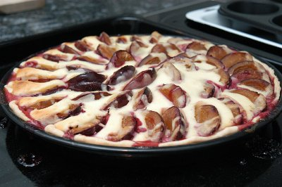

| Zutaten für 4 Personen: | |
| 250 g | Kuchenteig |
| Früchte, z.B. Zwetschgen, Aprikosen, Kirschen | |
| Paniermehl | |
| 250 g | Quark (Rahmquark oder Magerquark) |
| 2 gehäufte El | Zucker |
| 2 gehäufte El | Mehl |
| 1 | Ei |
| 1 Prise | Salz |
| Kaffeerahm oder Milch | |
Rundes Blech, ca. 28 cm Durchmesser fetten
Guss: Alle Zutaten bis zum Ei zusammen mischen. Kaffeerahm oder Milch unter Rühren zugeben, bis die Masse dickflüssig wird.
Teig auswallen, und auf das Blech geben. Den Teig mit einer Gabel einstechen, damit er sich beim Backen nicht aufwölbt. Den Teig mit Paniermehl bestreuen. Den Teig mit den entsteinten Früchten belegen und den Guss darüber giessen. Eventuell zuerst den Guss zugeben und dann die Früchte zugeben; sie sehen nach dem Backen besser aus.
Die Wähe bei 180°C-200°C ca. 40-60 Minuten backen. Eventuell die letzten 10 Minuten nur Unterhitze zugeben.
Eine Apfelwähe am Schluss mit Zimt bestreuen.
Claudia Knecht
Super! RE im Jan 2005
Sandra findet das katastrophal. Schade um die Zutaten meint sie. Grossmutters Wähe sei tausendmal besser. Grossmutters Wähe hat Haselnüsse statt Paniermehl und wird mit Zimt bestreut. Auch hat es kein Mehl im Guss. Ich fand dieses Rezept weiterhin gut. RE Sep 2011
@LINKBACK_TAG@ @WAKELOCK@